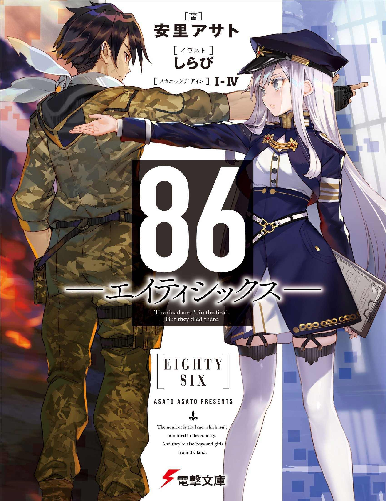

Novel Released
Eighty Six

A War Without Casualties.
The Republic of San Magnolia has long been under attack from the neighbouring Giadian Empire’s army of unmanned drones known as the Legion. After years of painstaking research, the Republic finally developed autonomous drones of their own...Continue Reading »
Re:Monster

Tomokui Kanata has been reincarnated into the weakest race, goblin, and given a new name, Rou, after having undergone an unfortunate death. However goblin Rou has retained his previous life’s memories, an unusual evolution, as well as being blessed with ability to gain status boosts from eating...Continue Reading »
You Are the Daughter of My First Love

The high school girl he rescued closely resembled his first love.
A workaholic who is still reeling from his sorrowful first love and a high school girl who looks like the splitting image of that very person...Continue Reading »
Love Advice From A Childhood Friend

“I’ve found someone I like.”
In his second year of high school, the main character, Ryunosuke, was asked for advice by his childhood friend, Hinagata Shiori, who sat next to him in class.
Why does Takamine’s beautiful childhood friend look down on herself?...Continue Reading »
Assassins Pride

As an aristocrat, Melida Angel studied at an academy that developed mana users but she did not have any mana. Kufa Vampir was dispatched to be her tutor and at the same time he was ordered to assassinate the girl if she did not have any talent...Continue Reading »
Tanin wo Yosetsukenai Buaisouna Joshi ni Sekkyou shitara, Mechakucha Natsukareta

This guy made my otherwise ordinary days a little more fun!
One day, Naoya Ookusu, the class president, gave a lecture to one of his classmates, Risa Enami about her lackluster attitude...Continue Reading »
The Detective Is Already Dead

Kimihiko Kimizuka has always been a magnet for trouble and intrigue. For as long as he can remember, he’s been stumbling across murder scenes or receiving mysterious attache cases to transport....Continue Reading »
The Angel Next Door Spoils Me Rotten

Amane Fujimiya’s neighbour in the apartment he lives in is the school’s number one lovable angel: Excellent and with a level of beauty that can only be described as angelic...Continue Reading »
From Toxic Classmate to Girlfriend Goals

Shirogane Koyuki, a girl known for her beauty and equally harsh tone, giving her the nickname ‘Venomous Snow White’, is saved by Sasahara Naoya as a man tried to hit on her...Continue Reading »
Omiai Shitakunakattanode, Muri Nandai na Jouken wo Tsuketara Doukyuusei ga Kita Ken ni Tsuite

One day, Yuzuru Takasegawa — a first-year high school student — is urged by his grandfather to go on an arranged marriage meeting, insisting that he wants to see his great-grandson before he dies...Continue Reading »
My Plain-looking Fiance is Secretly Sweet with Me

“Onii-san, congratulations on your marriage. This person is your bride.” “M-my name is Watanae Yuuka… I’m in the same class as you…”Continue Reading »
My Girlfriend Cheated on Me With a Senior, so I'm Cheating on Her With His Girlfriend

"Touko-senpai! Please have an affair with me!"
"Calm down, Isshiki-kun… I won't be satisfied unless we make those two who cheated on us experience hell itself!"
Isshiki Yuu was shocked by his girlfriend cheating on him, so he decided to cheat on her with the girlfriend of the boy who stole his girlfriend,...Continue Reading »
How Could You Like Another Girl When You Already Have A Cute Fiancée Like Me?

Chris, a super celebrity beautiful girl who claims to be his fiancée, suddenly appears in front of Kouta, a high school student who is poor and works part-time every day...Continue Reading »
I Kiss My Girlfriend's Little Sister

Hiromichi Sato has been dating Haruka for a month, and their relationship is quickly heading in a good direction...Continue Reading »
Our Dating Story: The Experienced You and The Inexperienced Me

"I- I like you!" "Eeh? Susuki!?". Kashima Ryuuto, a gloomy high school student. Because of a punishment game, he was forced to confess to Shirakawa Runa, a girl from the top of school caste and admired by everyone...Continue Reading »
My Stepsister Is My Ex-girlfriend

A certain boy and girl in middle school became a couple, flirted with each other, disagreed on trivial things, became more frequently irritated with each other...Continue Reading »
Days With My Step-sister

From classmates to brother and sister, living under the same roof. After his father's remarriage, Asamura Yuuta ends up getting a new stepsister, coincidentally the number one beauty of the school year...Continue Reading »
Return Of Death: I Kicked The Bucket And Now I'm Back At Square One With A Boyfriend Who Doesn't Remember Me

Life seemed perfect for Oriana after she started dating Vincent in the winter of her fifth year at the academy. Little did she know...Continue Reading »
In The Land Of Leadale

New Beginnings in Familiar Lands
After a horrific accident put her on life support, the last vestige of freedom Keina Kagami had was in the VRMMORPG World of Leadale...Continue Reading »